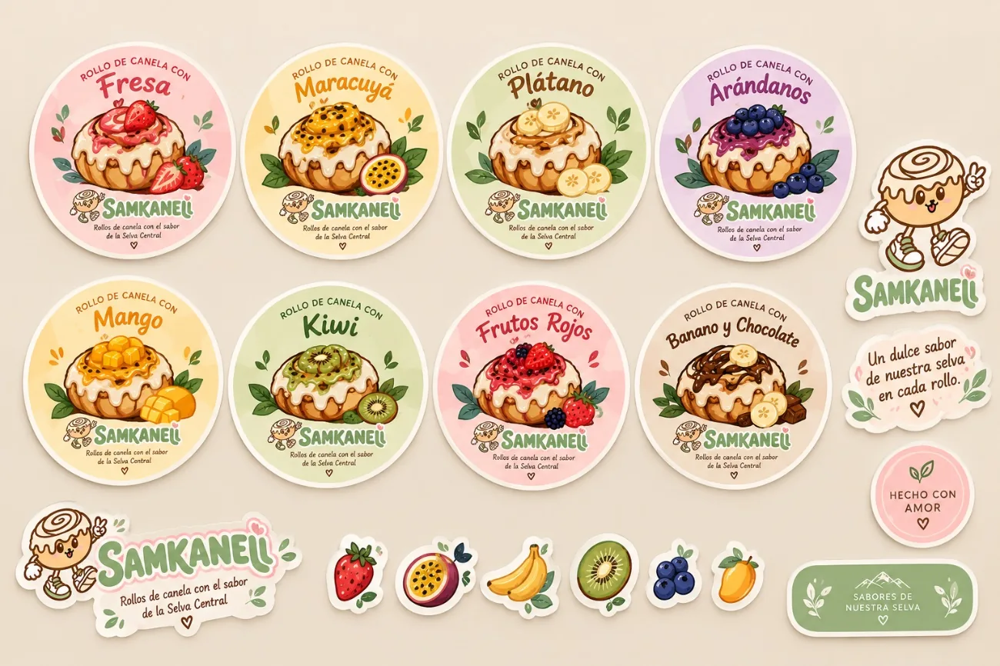
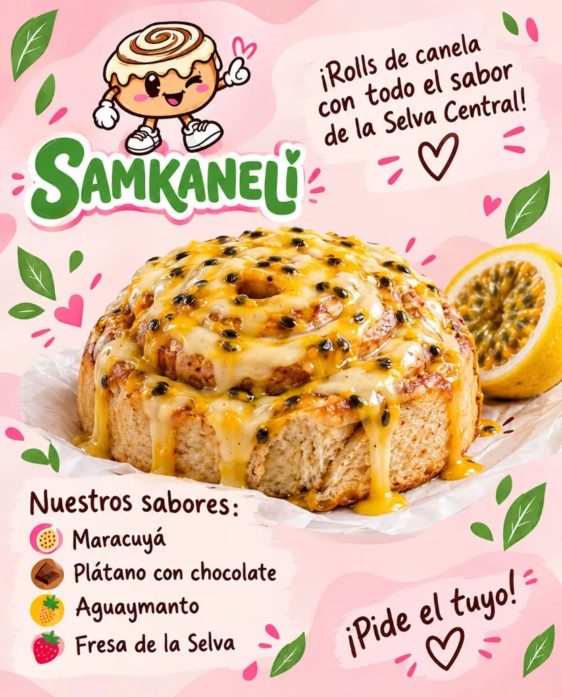

Prioridad 1
Coherencia visual
- Establecer normas básicas de uso del logotipoDe la ficha: manual básico
- Consolidar colores y tipografíasDe la ficha: manual básico
- Organizar los archivos de identidadAmpliación propuesta
Inicio › Propuestas de mejora
Hoja de ruta
Acciones prácticas para fortalecer SAMKANELI. Son propuestas: no hay cifras de crecimiento, presupuestos ni resultados ya obtenidos.

Proceso
Identificar → proponer → diseñar → aplicar → evaluar
Qué falta y qué se repite.
Ideas concretas por prioridad.
Piezas y normas.
Usarlas en el día a día.
Mirar qué funcionó y ajustar.
Prioridades
Prioridad 1
Prioridad 2
Prioridad 3
Prioridad 4
Prioridad 5
La ficha propone: manual básico de identidad visual, mejorar materiales publicitarios, mantener coherencia en colores y tipografías, fortalecer redes y desarrollar nuevas aplicaciones. El resto amplía esas ideas.
Calendario de contenido
Propuesta Ejemplo de ritmo de contenido; ajústalo a la capacidad real del equipo.
Campaña conceptual
Cómo se combinan identidad, fotografía, producto y comunicación.
Propuesta creativa: no es una campaña ejecutada





Otras campañas pueden inspirarse en las frutas de la Selva Central. No se presentan sabores hipotéticos como disponibles ni se inventan ofertas o fechas.
Siguientes pasos
Empieza por la Prioridad 1: sin coherencia visual, el resto pierde fuerza.